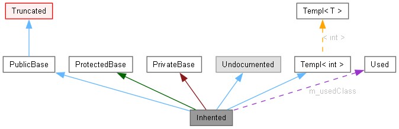

Esta página explica como interpretar os grafos gerados pelo doxygen.
Considere o seguinte exemplo:
class Invisible { };
class Truncated : public Invisible { };
class Undocumented { };
class PublicBase : public Truncated { };
template<class T> class Templ { };
class ProtectedBase { };
class PrivateBase { };
class Used { };
class Inherited : public PublicBase,
protected ProtectedBase,
private PrivateBase,
public Undocumented,
public Templ<int>
{
private:
Used *m_usedClass;
};
Isto irá gerar o seguinte gráfo:

As caixas no grafo acima possuem os seguintes significados:
-
Uma caixa cinza denota a estrutura ou a classe que geroueste grafo.
-
Uma caixa com a borda preta denota uma estrutura ou classe documentada.
-
Uma caixa com a borda cinza denota uma estrutura ou classe não documentada.
-
Uma caixa com a borda vermelha denota uma estrutura ou classe naqual nem todas as relações são mostradas. Um grafo é truncado quando esse não cabe no espaço especificado.
As setas possuem os seguintes significados:
-
Uma seta azul escura denota a relação de herança pública entre duas classes.
-
Uma seta verde escura denota a relação de herança protegida entre duas classes.
-
Uma seta vermelha escura denota a relação de herança privada entre duas classes.
-
Uma seta pontilhada púrpura denota a relação de uso e/ou agragação por outra classe/estrutura. A etiqueta da seta denota o nome do(s) campo(s) que representa(m) este apontamento.
-
Uma seta pontilhada amarela denota a relação de instanciação de uma template. A etiqueta da seta denota os parâmetros de instanciação desta template.
 1.17.0
1.17.0